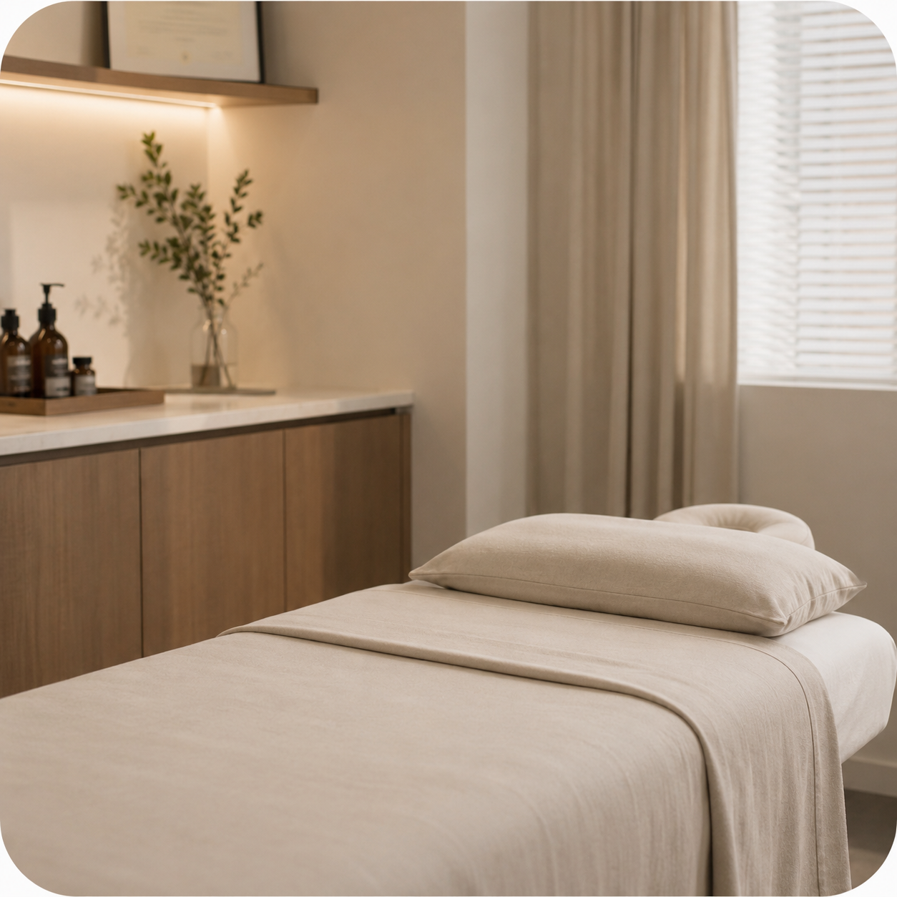
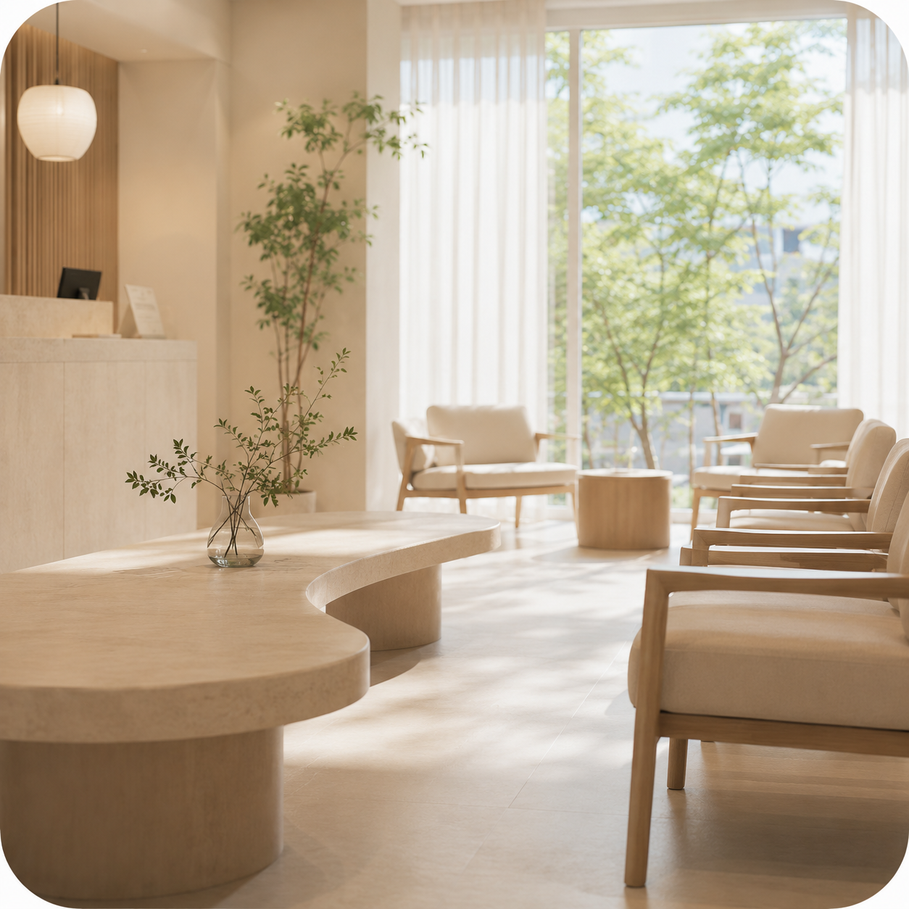

01 DEAR ME
나를 돌보는 일부터
시작합니다.
피로를 참고, 잠을 줄이고,
괜찮다는 말로 하루를 넘기기 전
지금의 몸이 보내는 신호부터 살핍니다.
진료가 또 하나의 부담이 되지 않도록,
현재의 생활에 맞는 방법을 함께 찾습니다.
PHILOSOPHY OF CARE
증상만 따로 보지 않습니다.
지금의 몸과 생활이 어떻게 이어져 있는지 함께 살핍니다.
We look beyond symptoms,
toward the rhythm of everyday life.
OUR APPROACH
디어한의원은 증상만 묻지 않습니다.
몸이 보내는 신호와 그 신호가 이어져 온 하루를 함께 듣습니다.
01 DEAR ME
피로를 참고, 잠을 줄이고,
괜찮다는 말로 하루를 넘기기 전
지금의 몸이 보내는 신호부터 살핍니다.
진료가 또 하나의 부담이 되지 않도록,
현재의 생활에 맞는 방법을 함께 찾습니다.
02 DEAR YOU
진료실에는 한 사람의 불편함만 오지 않습니다.
아이와 배우자, 부모를 걱정하며
함께 시간을 보내온 마음도 있습니다.
디어한의원은 환자의 몸뿐 아니라
그 곁에서 이어져 온 질문까지 충분히 듣고 설명합니다.
03 DEAR US
한 사람의 컨디션은
가족과 일상의 흐름에도 이어집니다.
디어한의원은 진료실 안의 변화가
생활의 가벼움으로 이어질 수 있도록
함께 지속할 수 있는 방법을 고민합니다.
WHAT WE VALUE
01
증상만 떼어 보지 않고
현재의 생활과 컨디션을 함께 살핍니다.
02
이야기를 서두르지 않고
이해할 수 있는 언어로 설명합니다.

03
억지로 버티는 방법보다
지금의 일상에서 이어갈 수 있는 방향을
고민합니다.

04
진료실에서의 변화가
생활의 가벼움으로 이어지도록 살핍니다.